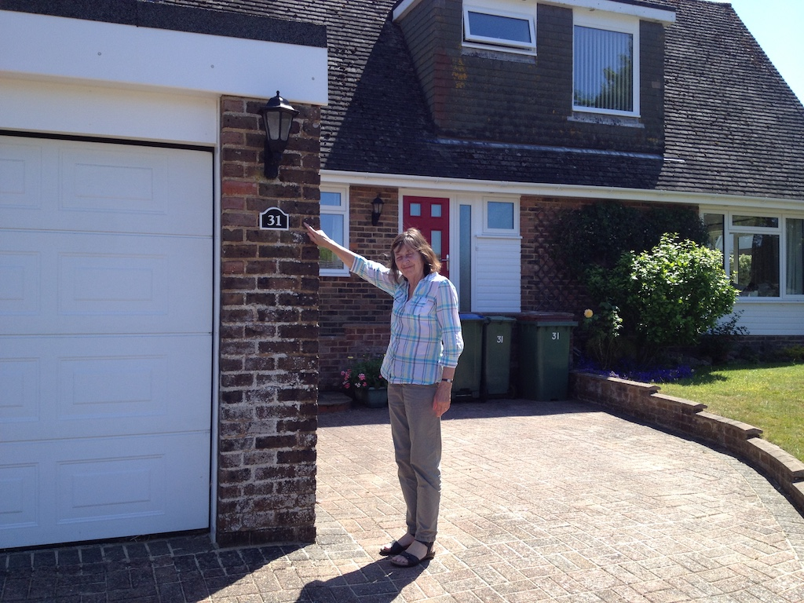

Some houses have just a name, but most houses have a number. Rowan lives at Achterbroek 1, Austin and Juniper live at 2511 Catalina Drive and we live at 31 Penlands Vale.
When we moved into our little, the only number on the outside was a small, dirty one fixed to the garage wall. Grandma would like a big number next to the front door, but until we can find one I decided to paint the one we had. I know that Rowan, Austin and Juniper like painting, so I thought I would tell you about my painting.
I had to paint it over three days. On the first day I unscrewed it from the wall and cleaned it. That took quite a lot of time since it was very dirty and the old paint was flaking off. Then I painted the black parts. The next day I gave it another coat of black paint and painted the numbers and the border white. On the third day I gave the numbers and border another coat of white paint and, when it was dry, screwed it back on the wall. I had painted the tops of the screws black so that they would not be seen.
As you can see in the photo, the number is not very big, but Grandma is pleased with it. But she still wants some big numbers on the wall next to the front door.